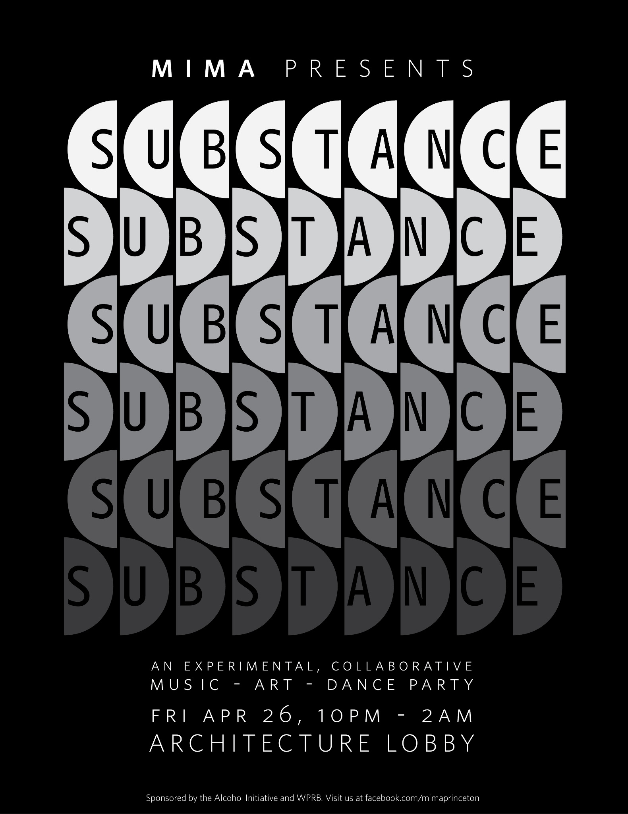
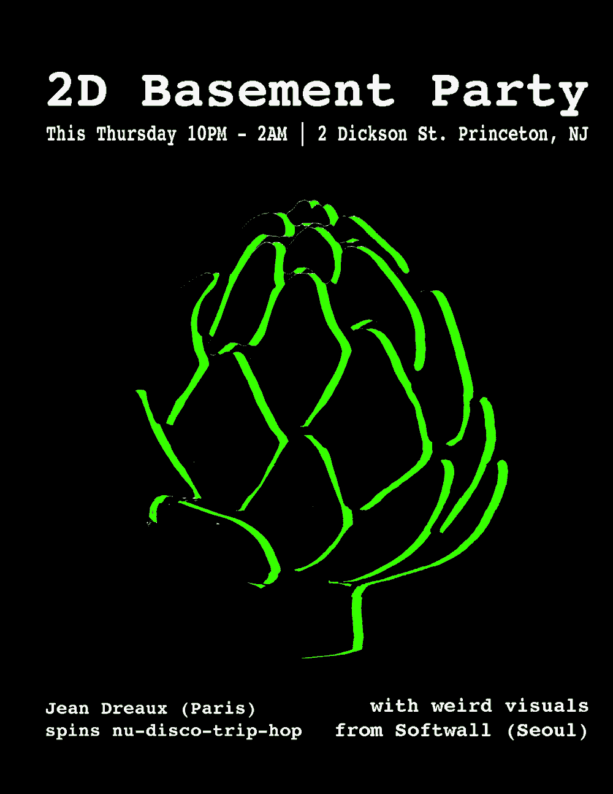
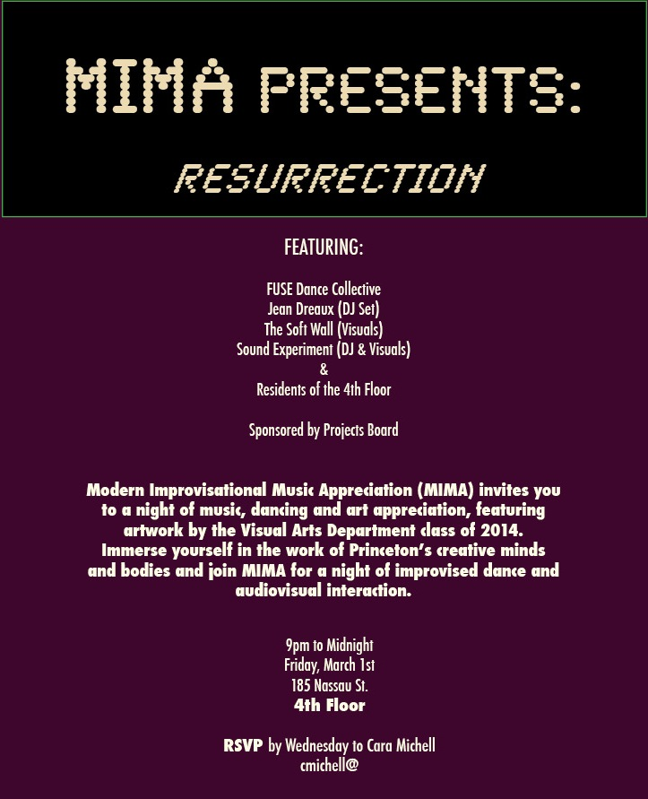

GLOBALIDIOT
|
Video Arts
is a short video and animation hybrid, about a working professional seeking an escape from his never-ending work life. By contrasting pixilation (photographing live actors in stop motion) and video, we explore their unique characteristics.
is an improvisational audio-video performance with George Dyer. Mixing and distoring field recordings and motion pictures, TIME WAVES aims to explore the discord and similarities between individuals' memories. In this sketch of the function of universal change, visual and audio fragments form intelligible representations, which nonetheless remain, like all of our experiences and theoretical constructions, necessarily random or imagined.
Full Description of Seoul Searching (2017)
As a freelance videographer for Vice/Virtue Austria, I created a range of video contents for Coca Cola and Sprite. From GIFs to online commercials, I produced authentic and youthful marketing materials for the fall and winter seasons (2016).

is a moving photo-essay collecting memories and artifacts from Tongyeong and Pusan, Korea. Written by Daniela Atanasova. (2014)
is an examination of our collective soul through visual experimentation of artificial colors, hues, and intensities. Fleeting paper lanterns in Ganghwado heal my mind, having disturbed by everlasting city lights. The rapid conveyor belt of this 21st century drags all of us along its rollercoaster. Let's stop and let's enjoy this darkness. (2013)
Phil
Greenspan (Philosophy, Duke '09)
and I developed and taught a undergraduate seminar course on philosophy
of and for
new media. Both new and old philosophical inquires are ubiquitously
embedded in new media form
and content. Specifically we focused on four major topics: Personal
Identity,
Simulacra Simulation and Synthetic, Self-Referentiality, and Free Will.
Course Syllabus (Spring 2009) is inspired by DNA microarray experiments and illustrates the surprising beauty of a complex gene expression profile.
Created with Ashwin Kulothungun, this 3D animation moves through various experimental and computational steps in the state-of-art genomic study, from hybridization and data extraction to clustering and network analysis. (2010)
2010 ISMB Art & Science Exhibition Selection
is a generative video installation by Bill Seaman and Daniel C. Howe. This work recombines words and motion pictures in real-time, based on associative data. The audience is encouraged to make their own associations. From footages of installaions, soundtracks, and interviews, I was commissioned to create two showcase videos in 2008.
Watch a Paris Version with Commentaries (Fall 2008) is an experimental video, capturing a overachieving life style of college students whose pursuit of efficiency spawns mundane repetition
and thoughtlessness. Can this generation be saved? Cyclic video clips, still pictures, and an original sound track explore this phenomenon as well as my sympathy, concern, and personal dilemma. (Fall 2006)
Scene First Film Festival (Wilmington, NC) Selection (2007) is a
montage of several ethnicities expressing their love of music.
Short, simple, and bold, this short video, broadcasted nationally on MTV and MTV2, expresses how we can bond and communicate through music.
MTV MPEG US Selection (March 2003) |
Music Video
Puff the Dust by George Dyer Band
is a title song from their 2018 LP. Based in Poland, George Dyer Band is consisted of Rafał Biłas (guitar), Martin Sanchez (drum), and Maciek Mandrykowski (bass).
is an original song by a Ghanaian rapper/poet who now resides in Paris. kwawme talks inequality and injustice in Ghana and greater Africa. This song sampled Kenyan activist Professor PLO Lumumba's speech. (2017)
You've Changed by Valentina Vatutina
is a fantastic cover of a 1941 jazz standard by Billie Holiday. We captured its atmosphere with Polish autumn's chilly afternoons, occasional rains, and late night memories. (2017)
3 o'Clock Blues by Vatutina and Dyer
is a live session featuring Valentina Vatutina and George Dyer. Cover of Lowell Fulson's original tune (2018)
The Cake is a Lie by Frank Martiniq
is the eponymous video for an original mix by Frank Martiniq. Progression and regression are captured through juxapositions and repetitions. Choreography by Patricia Chen, Grace Singleton, Samantha Gebb, Tess Bernhard, and Nadine Gross. (Released in 2017)
Low quality due to the Label's request:
is an electronic music, visual, and improvisational project with Mart Sanchez and George Dyer. Both audio and visuals in all mixtapes were performed and recorded live (2017)
More Mixtapes on Youtube Night Session by Youri Gregoire
is a remix of LED diabolo performance by Youri Gregoire,
intended to show both dexterity and trance. Filmed at the Multimedia Fountain at Pergola (Wroclaw),
it features Frank Martiniq's "Adriano". (2016)
Mouth to Mind (Dub) by Jean Dreaux
is the eponymous music video. Sensemaya Afrobeat All-Stars released the original song in its 2013 EP. (2014)
is a promotional mix created for an audio-visual collective, "Longform Sarcasm". (2014)
With Jean Dreaux and Sound Experiment, I performed as VJ Softwall at several parties in Princeton, NJ. Here are selected fliers:
   |
Documentaries
is a working-in-progress documentary film about Nadodrze, Wrocław. Nadodrze is a dynamic and historical neighborhood that is undergoing revitalization recently. This is a result of documenting and interviewing a variety of residents during the autumn and winter of 2018 and 2019.
Alternative Formalism Cut:
is a short story by Tarzan. Out of St. Petersburg, Florida, he tells a story about "snakes" that bite and steal. He invites us into his childhood and subsequent rise in the game.
is a longboard video made in downtown St. Petersburg, FL. Tarzan, Shaggy, G-rider, Sears, and Punky cruise the street and bomb the parking lot, with beautiful backdrops and vibes of DTSP (2016)
shares slices of my faded memory, formed long before this realization sunk into my subconsciousness. In a search for daydreams and an escape from reality, I propel myself once again into this journey of something I don't quite understand. In this hazy reverie twenty-something angst, it is constant motion which becomes the solace. (2013)
is a trilogy of stop motion pictures, paying homage to "a long sunday where nothing
happens but that is exactly what we want." Feeling lazy and content, we partake in little adventures now and then,
just to feel alive.
a morning with m.v. harte (2011) giddy up, st. pete (2011) in the tube (2013) or "how i never grew up" is a lo-fi visual travel journal, a self-reflective confession, and a depressing thought.
Flip video clips from Europe (circa summer 2009) were layered with filmmaker's nonlinear storytelling of the past, the present, and the future.
Through a seemingly arbitrary mixture of visual, narrative, and constant noise, the narrator commemorates those overwhelming hospitalities of our drivers, hosts, and strangers. (2010)
anything unimportant [5 installments] is a collection of five short documentaries, exploring problems, dilemmas, and philosophical inquiries of youth. Through personal interviews, five young men share alternative perspectives and life styles with a sense of humor.
An evolution of formats and stylistic approaches highlights my own maturation process over three years. anything unimportant 1 - B&W DV (Spring 2006) anything unimportant 2 - Lowend HDV (Spring 2008) anything unimportant 3 - HDV (Summer 2008) anything unimportant 4 - DVCPRO HD (Spring 2009) anything unimportant 0 - Broken VHS (Spring 2009) Duke Coffee House (May 2009) segmented memories [interactive] from parallel universes is a non-linear
database video, produced as an interactive installation. From a 30 hour long video
archive of private, public, and social happenings in Australia, Korea, and South Africa,
34 clips are created and organized according to their themes, compositions, and narratives.
Through navigating these clips, viewers may discover my own psychological and physical
journey accompanied by commentaries from my family and friends. (2007-2008)
Download Segmented Memories (MacOS 10.3+) Smith Warehouse Arts Exhibition in Durham, NC (May 2009) C.H.A.T. Festival Selection in Chapel Hill, NC (Feburary 2010) |
{kind=link}
{kind=link}
{kind=link}